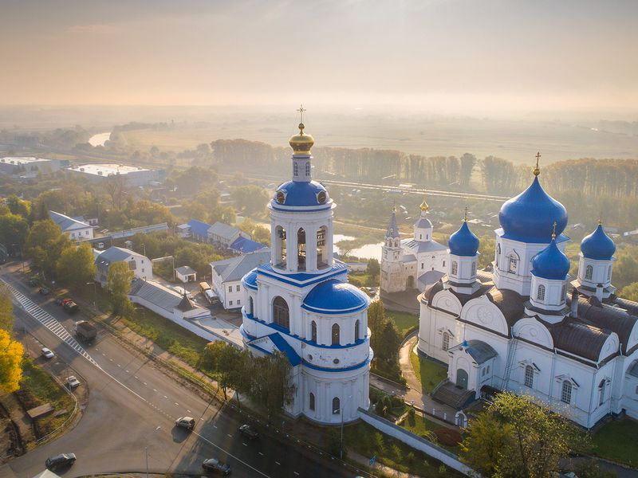

Боголюбово
С виду непримечательный посёлок хранит в себе много памятников духовного наследия и радует глаз невероятно красивыми пейзажами. Сюда приезжают для того чтобы зарядиться положительными эмоциями и узнать много интересного о том, как жили наши предки. Провинция Суздальского района, расположенная на побережье Клязьмы, восхищает туристов особенной атмосферой. Когда-то село являлось резиденцией Андрея Боголюбского. Через некоторое время на территории появился монастырь.

Известно, что Андрей Боголюбский пытался сделать из Владимира новую столицу Руси, поэтому к строительству своей резиденции (Боголюбскому замку), которая должна была стать его "лицом" он относился достаточно серьезно и не скупился на средства, выделяемые для ее возведения. Строительство замка, представляющего собой дворцовый ансамбль, выполненный в едином стиле, осуществлялось в период времени между 1158 и 1165 гг.
Был построен князем Андреем Боголюбским в 1158—11б4 годах как замок. Внутри каменных стен воздвигли белокаменный собор во имя Рождества Богородицы. Храм был украшен резными фресками и рельефами, позолотой и медью, а также оконными витражами. После смерти князя в Боголюбово расположился мужской монастырь. Древний собор, разрушившийся от ветхости и неумелых переделок, в XVIII столетии заменили новым.